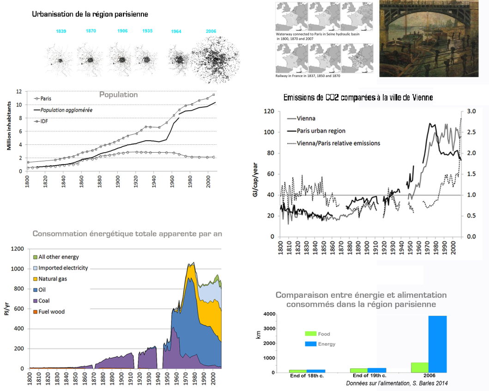
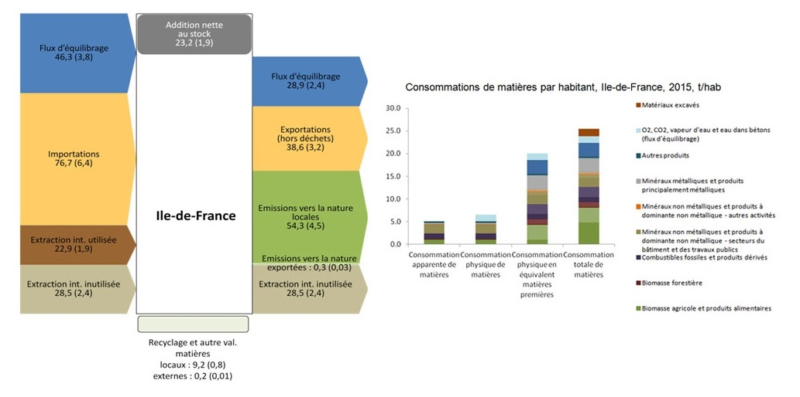
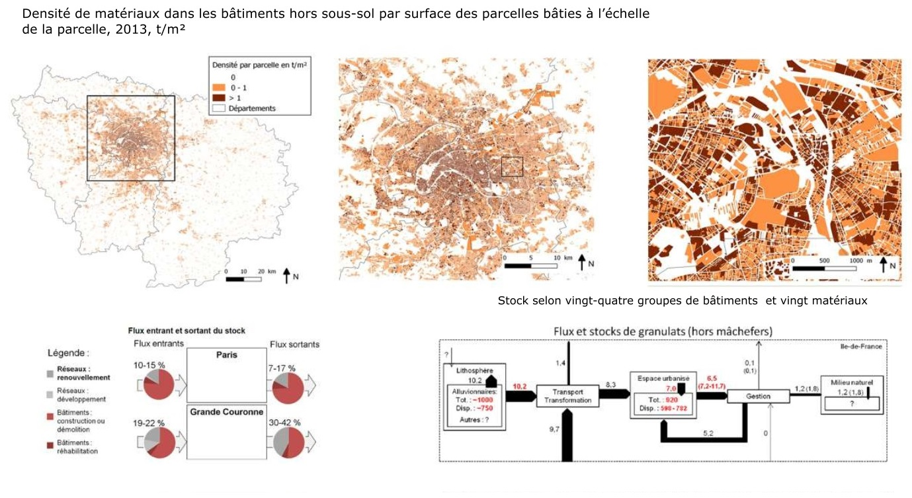
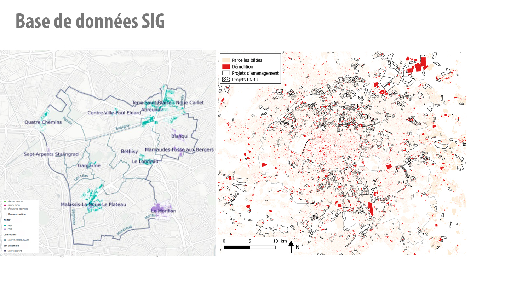

Analyse des flux de matière et d'énergie et bilan de carbone à l'échelle de la ville et du territoire pour le diagnostic préalable à la mise en place d'un plan économie circulaire du territoire


Diagnostic des flux de matériaux de construction pour des opérations d'aménagement/ Conseil et accompagnement des acteurs pour la mise en place d'une démarche d'économie circulaire

Collecte de données environnementales du territoire/ Construction de la base de données spatialisées/ Développement des outils de visualisation et de partage des données en ligne/ Accompagnement des acteurs pour la gestion et le suivi de la base de données

Docteure en Aménagement-Urbanisme, ingénieure en Génie Urbain, Eunhye est spécialiste de l'analyse des flux de matières et des données environnementales. Elle a une expérience de plusieurs années dans la recherche publique (CNRS). Eunhye est co-gérante et responsable de la direction de CitéSource.
LinkedinDocteur en Aménagement-Urbanisme, ingénieur en Génie de l’Environnement. Vincent est spécialiste du métabolisme urbain des matériaux de construction et de l'économie circulaire. Il a une expérience de plusieurs années dans la recherche publique (CNRS, CSTB). Vincent est enseignant-chercheur à Unilasalle Rennes - Ecole des métiers de l'environnement. Il est co-gérant et responsable R&D de CitéSource.
Linkedin